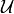
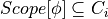
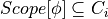

Cluster Graph¶
- class pgmpy.models.ClusterGraph.ClusterGraph(ebunch=None)[source]¶
Base class for representing Cluster Graph.
Cluster graph is an undirected graph which is associated with a subset of variables. The graph contains undirected edges that connects clusters whose scopes have a non-empty intersection.
Formally, a cluster graph is  for a set of factors
 over
over  is an
undirected graph, each of whose nodes
is an
undirected graph, each of whose nodes  is associated with a subset . A cluster
graph must be family-preserving - each factor
is associated with a subset . A cluster
graph must be family-preserving - each factor  must be associated with a cluster C, denoted
must be associated with a cluster C, denoted
 , such that . Each edge between a pair of clusters
, such that . Each edge between a pair of clusters  and
and  is associated with a sepset .
is associated with a sepset .- Parameters
data (input graph) – Data to initialize graph. If data=None (default) an empty graph is created. The data is an edge list
Examples
Create an empty ClusterGraph with no nodes and no edges
>>> from pgmpy.models import ClusterGraph >>> G = ClusterGraph()
G can be grown by adding clique nodes.
Nodes:
Add a tuple (or list or set) of nodes as single clique node.
>>> G.add_node(('a', 'b', 'c')) >>> G.add_nodes_from([('a', 'b'), ('a', 'b', 'c')])
Edges:
G can also be grown by adding edges.
>>> G.add_edge(('a', 'b', 'c'), ('a', 'b'))
or a list of edges
>>> G.add_edges_from([(('a', 'b', 'c'), ('a', 'b')), ... (('a', 'b', 'c'), ('a', 'c'))])
- add_edge(u, v, **kwargs)[source]¶
Add an edge between two clique nodes.
- Parameters
u (nodes) – Nodes can be any list or set or tuple of nodes forming a clique.
v (nodes) – Nodes can be any list or set or tuple of nodes forming a clique.
Examples
>>> from pgmpy.models import ClusterGraph >>> G = ClusterGraph() >>> G.add_nodes_from([('a', 'b', 'c'), ('a', 'b'), ('a', 'c')]) >>> G.add_edges_from([(('a', 'b', 'c'), ('a', 'b')), ... (('a', 'b', 'c'), ('a', 'c'))])
- add_factors(*factors)[source]¶
Associate a factor to the graph. See factors class for the order of potential values
- Parameters
*factor (pgmpy.factors.factors object) – A factor object on any subset of the variables of the model which is to be associated with the model.
- Returns
- Return type
Examples
>>> from pgmpy.models import ClusterGraph >>> from pgmpy.factors.discrete import DiscreteFactor >>> student = ClusterGraph() >>> student.add_node(('Alice', 'Bob')) >>> factor = DiscreteFactor(['Alice', 'Bob'], cardinality=[3, 2], ... values=np.random.rand(6)) >>> student.add_factors(factor)
- add_node(node, **kwargs)[source]¶
Add a single node to the cluster graph.
- Parameters
node (node) – A node should be a collection of nodes forming a clique. It can be a list, set or tuple of nodes
Examples
>>> from pgmpy.models import ClusterGraph >>> G = ClusterGraph() >>> G.add_node(('a', 'b', 'c'))
- add_nodes_from(nodes, **kwargs)[source]¶
Add multiple nodes to the cluster graph.
- Parameters
nodes (iterable container) – A container of nodes (list, dict, set, etc.).
Examples
>>> from pgmpy.models import ClusterGraph >>> G = ClusterGraph() >>> G.add_nodes_from([('a', 'b'), ('a', 'b', 'c')])
- check_model()[source]¶
Check the model for various errors. This method checks for the following errors.
Checks if factors are defined for all the cliques or not.
Check for running intersection property is not done explicitly over here as it done in the add_edges method.
Checks if cardinality information for all the variables is available or not. If not it raises an error.
Check if cardinality of random variable remains same across all the factors.
- Returns
check – True if all the checks are passed
- Return type
boolean
- copy()[source]¶
Returns a copy of ClusterGraph.
- Returns
ClusterGraph
- Return type
copy of ClusterGraph
Examples
>>> from pgmpy.factors.discrete import DiscreteFactor >>> G = ClusterGraph() >>> G.add_nodes_from([('a', 'b'), ('b', 'c')]) >>> G.add_edge(('a', 'b'), ('b', 'c')) >>> phi1 = DiscreteFactor(['a', 'b'], [2, 2], np.random.rand(4)) >>> phi2 = DiscreteFactor(['b', 'c'], [2, 2], np.random.rand(4)) >>> G.add_factors(phi1, phi2) >>> graph_copy = G.copy() >>> graph_copy.factors [<DiscreteFactor representing phi(a:2, b:2) at 0xb71b19cc>, <DiscreteFactor representing phi(b:2, c:2) at 0xb4eaf3ac>] >>> graph_copy.edges() [(('a', 'b'), ('b', 'c'))] >>> graph_copy.nodes() [('a', 'b'), ('b', 'c')]
- get_cardinality(node=None)[source]¶
Returns the cardinality of the node
- Parameters
node (any hashable python object (optional)) – The node whose cardinality we want. If node is not specified returns a dictionary with the given variable as keys and their respective cardinality as values.
- Returns
int or dict – If node is not specified returns a dictionary with the given variable as keys and their respective cardinality as values.
- Return type
If node is specified returns the cardinality of the node.
Examples
>>> from pgmpy.models import ClusterGraph >>> from pgmpy.factors.discrete import DiscreteFactor >>> student = ClusterGraph() >>> factor = DiscreteFactor(['Alice', 'Bob'], cardinality=[2, 2], ... values=np.random.rand(4)) >>> student.add_node(('Alice', 'Bob')) >>> student.add_factors(factor) >>> student.get_cardinality() defaultdict(<class 'int'>, {'Alice': 2, 'Bob': 2})
>>> student.get_cardinality(node='Alice') 2
- get_factors(node=None)[source]¶
Return the factors that have been added till now to the graph.
If node is not None, it would return the factor corresponding to the given node.
Examples
>>> from pgmpy.models import ClusterGraph >>> from pgmpy.factors.discrete import DiscreteFactor >>> G = ClusterGraph() >>> G.add_nodes_from([('a', 'b', 'c'), ('a', 'b'), ('a', 'c')]) >>> G.add_edges_from([(('a', 'b', 'c'), ('a', 'b')), ... (('a', 'b', 'c'), ('a', 'c'))]) >>> phi1 = DiscreteFactor(['a', 'b', 'c'], [2, 2, 2], np.random.rand(8)) >>> phi2 = DiscreteFactor(['a', 'b'], [2, 2], np.random.rand(4)) >>> phi3 = DiscreteFactor(['a', 'c'], [2, 2], np.random.rand(4)) >>> G.add_factors(phi1, phi2, phi3) >>> G.get_factors() >>> G.get_factors(node=('a', 'b', 'c'))
- get_partition_function()[source]¶
Returns the partition function for a given undirected graph.
A partition function is defined as

where m is the number of factors present in the graph and X are all the random variables present.
Examples
>>> from pgmpy.models import ClusterGraph >>> from pgmpy.factors.discrete import DiscreteFactor >>> G = ClusterGraph() >>> G.add_nodes_from([('a', 'b', 'c'), ('a', 'b'), ('a', 'c')]) >>> G.add_edges_from([(('a', 'b', 'c'), ('a', 'b')), ... (('a', 'b', 'c'), ('a', 'c'))]) >>> phi1 = DiscreteFactor(['a', 'b', 'c'], [2, 2, 2], np.random.rand(8)) >>> phi2 = DiscreteFactor(['a', 'b'], [2, 2], np.random.rand(4)) >>> phi3 = DiscreteFactor(['a', 'c'], [2, 2], np.random.rand(4)) >>> G.add_factors(phi1, phi2, phi3) >>> G.get_partition_function()
- remove_factors(*factors)[source]¶
Removes the given factors from the added factors.
Examples
>>> from pgmpy.models import ClusterGraph >>> from pgmpy.factors.discrete import DiscreteFactor >>> student = ClusterGraph() >>> factor = DiscreteFactor(['Alice', 'Bob'], cardinality=[2, 2], ... values=np.random.rand(4)) >>> student.add_node(('Alice', 'Bob')) >>> student.add_factors(factor) >>> student.remove_factors(factor)